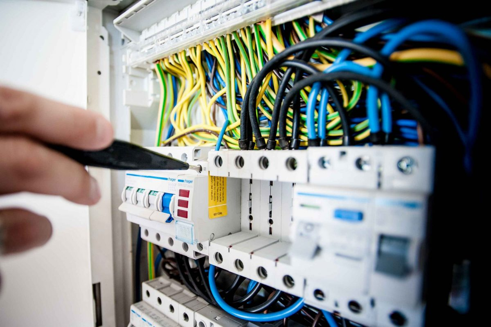
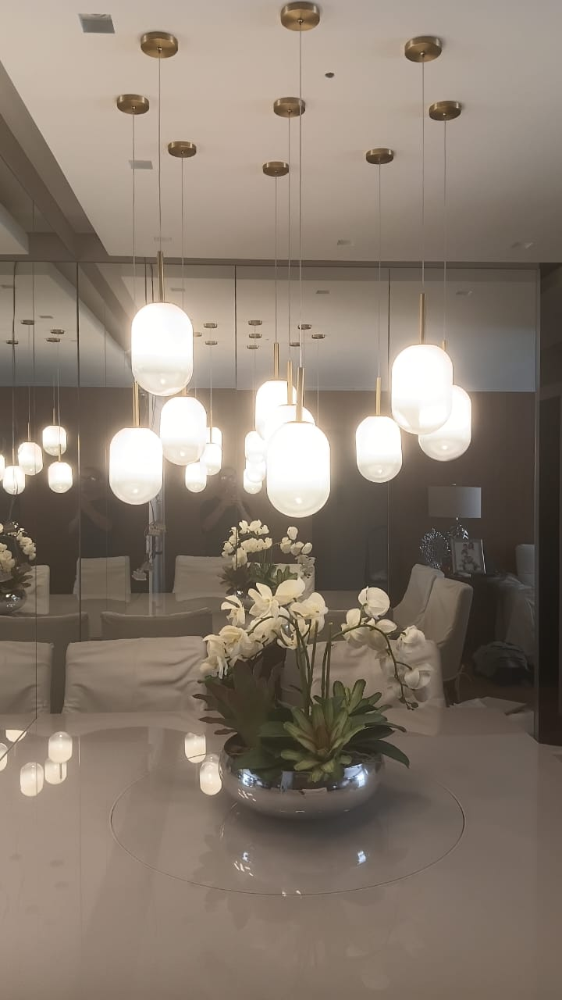

Instalações residenciais
Pontos de tomada, iluminação, passagem de cabos, ligações e apoio em melhorias elétricas no imóvel.

Eletricista predial em Nilópolis - RJ
Serviços elétricos residenciais, instalações, reparos e manutenção com foco em segurança, organização e qualidade no atendimento.
Marcus Paulo Lyra Gomes é eletricista predial com experiência em serviços elétricos residenciais, apoio em atividades da área elétrica e vivência em rotina industrial.
Técnico em Eletrotécnica pelo Ibest, Formado em Eletricista Predial e qualificação como Eletricista Industrial pela Firjan SENAI.
Atuação voltada a instalações, reparos, manutenção básica, suporte técnico e organização dos materiais e ferramentas necessários ao serviço.
Pontos de tomada, iluminação, passagem de cabos, ligações e apoio em melhorias elétricas no imóvel.
Identificação de falhas, correção de problemas simples e orientação sobre a melhor solução para o caso.
Verificação de componentes, substituições, organização de pontos e cuidados preventivos na instalação.
Apoio na montagem, instalação e manutenção de componentes elétricos conforme a necessidade do serviço.
Separação e conferência de materiais, ferramentas e componentes para execução limpa e eficiente.
Experiência em ambiente de produção, apoio operacional e trabalho em equipe para cumprimento de metas.
Prestação de serviços elétricos residenciais, instalações, reparos e manutenção elétrica.
Studio 3 Indústria e Comércio de Produtos de Iluminação Ltda, com suporte à montagem e manutenção.
Formação em curso pelo Ibest, em Benfica - RJ
Capacitação em curso pela Firjan SENAI, em Benfica - RJ, com foco em atuação industrial.
Trabalhos recentes

Marcus atende a partir de Nilópolis - RJ. Envie uma mensagem com o tipo de imóvel, o serviço desejado e, se possível, fotos do local para facilitar o primeiro diagnóstico.